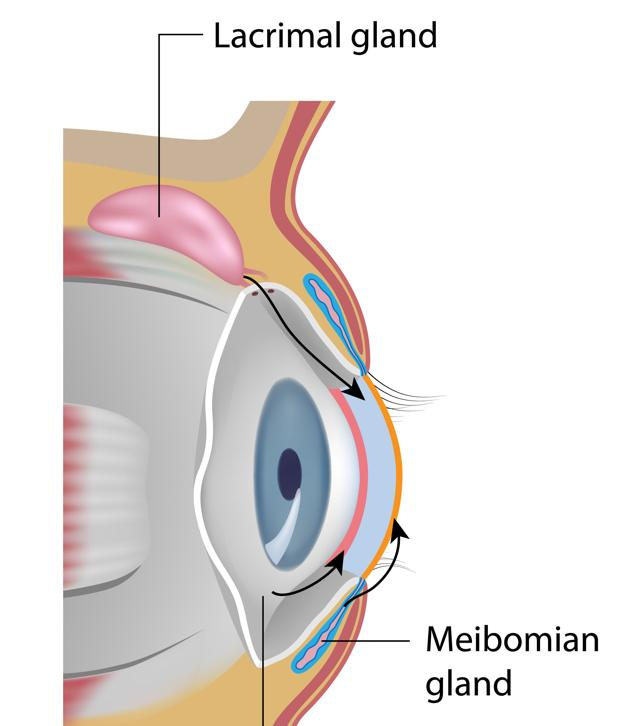

Dry eyes happen when your eyes do not make enough tears, or your tears do not stay on your eyes long enough. Tears help keep the eyes moist and comfortable. When the eyes are dry, they may sting or feel sandy, itchy, or tired.
Your eyes have 2 types of tears:
Reflex tears: These are made quickly when your eyes are irritated or if you get something in your eye. They are meant to protect your eyes from harm. These tears come from your lacrimal gland.
Lubricating tears: These are the tears that keep your eyes moist and comfortable over time. They flow smoothly across your eyes. They come from structures and cells around your eyes, which include conjunctival tear glands, goblet cells, and meibomian glands.
When lubricating tears do not form or stay on your eyes, they can feel dry and uncomfortable.

Having dry eyes can be frustrating, but there are ways to make them feel better. This guide will share some treatments and advice that can help. Ask your care team any questions you have. We are here to support you.
Dry eyes can happen for many reasons. Common causes include:
Wind or air conditioning
Time in the sun without eye protection
Smoking or being around secondhand smoke
Wearing contact lenses
Cold and allergy medicine
Too much time in front of a computer, phone, or other screens
Aging
Certain medical conditions
A gritty or sandy feeling in your eyes
Redness or irritation
Feeling tired
Blurred vision
Sensitivity to light
Mucus
Excess tearing, which can happen when your eyes are trying to fix the dryness
Your care team will look at your eyes carefully. They will ask about your symptoms and check how your tears flow and how your eyes look.
Sometimes, they may do a test to see how many tears you produce or how quickly your tears evaporate. They may also check the chemical properties of your tears.
Your care team may suggest eye drops or ointments to help your eyes stay moist. These may include over-the-counter or prescription medicines.
Sometimes, your care team might suggest pills or other treatments to improve your tear production.
If your care team gives you antibiotics for an associated eye infection, it is very important to finish all of the medicine. If you stop early, the infection may not go away and can become harder to treat. Call your care team if you have any problems with your medicines.
Stay hydrated: Drink plenty of water each day to keep your body and eyes moist.
Limit screen time: Take frequent breaks from screens. Look away for a few minutes every hour. Try blinking often when using screens.
Use a humidifier: Keep the air in your home moist, especially in dry or cold weather.
Avoid air flow: Try to stay away from the direct flow of heating or air conditioning.
Wear sunglasses: Protect your eyes from wind and bright sunlight when outside.
Limit contact lens use: If you wear contacts, follow your care team’s advice about wearing and cleaning them.
Call your care team if:
You have increased redness or pain in your eyes.
You have vision changes that do not go away.
Your eyes become very sticky or increasingly irritated.
You have worsening symptoms that do not improve with treatment.
Get help right away if:
You have sudden vision loss.
Your eyes are very painful or swollen.
You have severe eye or face pain along with vision problems.
You feel very faint or dizzy, or your symptoms feel life-threatening.
Thank you for trusting us with your care. We are here to support you and want you to feel your best. Contact us with any questions.
IF YOU HAVE A MEDICAL EMERGENCY, CALL 911 OR GO TO THE EMERGENCY ROOM.
The information presented is intended for general information and educational purposes. It is not intended to replace the advice of your health care provider. Contact your health care provider if you believe you have a health problem.
Last updated May 2025
© 2025 Mytonomy, Inc. All rights reserved.